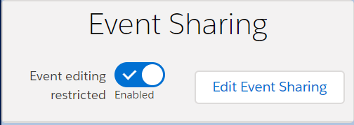

Event Sharing UI Prototyping
Intent: rapid prototyping of UI elements related to story W-006144 - Event Sharing.
Event Record Page UI Elements
Event Record Page
We are considering adding a UI element to the Event record page that would provide users with information about the current state of event sharing, as well as allow the user to change the overall event from view only to view/edit Mission-wide (account wide).
(note new UI element titled "Event Sharing" in right column below)

A close-up view of one of the new proposed sharing components is pictured here along with some alternatives. (Click to interact, then close the tab to return to this page)
Using a toggle to restrict editing (Click to interact, then close the tab to return to this page)

Using a toggle to allow editing (Click to interact, then close the tab to return to this page)
Selection Modal to Allow a User to Edit an Event
Once an event is restricted to only certain users being able to edit it, the Event owner must select any additional users (if any) that will have rights to edit the event. This will take the form of a modal pop-up that must be closed before the user can return to the event.
Modal Grid (Click to interact, then close the tab to return to this page)
Modal Multi-Select Boxes (Click to interact, then close the tab to return to this page)